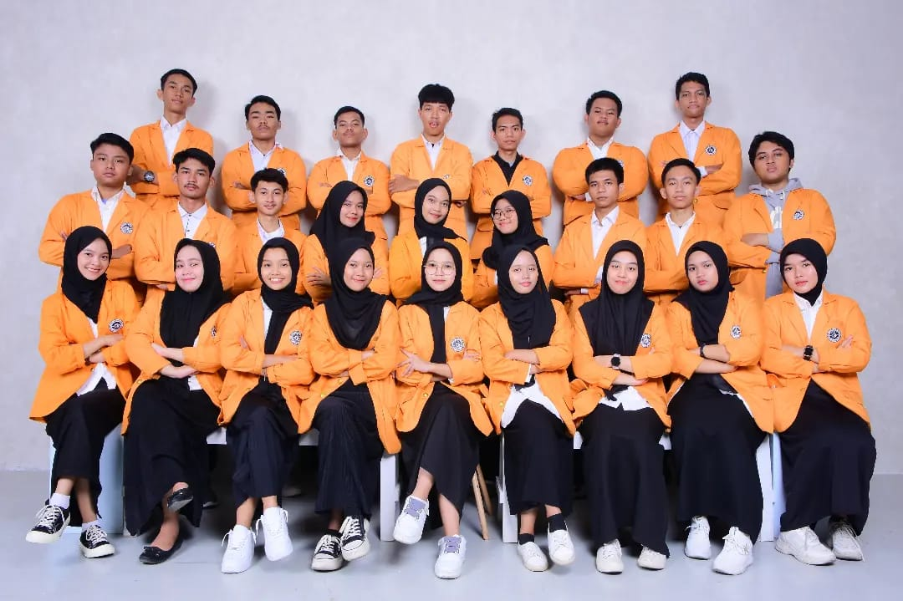
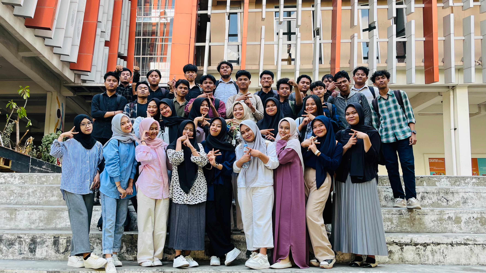

Nama : agus Salim
NIM : 230209502033
Kelas : PTIK
Alamat : Sultan Alauddin 2
Sekolah Asal SMK LANIANG MAKASSAR
UNIVERSITAS NEGERI MAKASSARNever stop tring to see the good in yourself :)
PENGALAMAN SELAMA KULIAH |
Selama kuliah, pengalaman saya sangat beragam dan berharga. Di awal, saya menghadapi tantangan dalam menyesuaikan diri dengan ritme akademik yang lebih intensif dibandingkan dengan sekolah menengah. Namun, seiring waktu, saya belajar untuk mengatur waktu dengan lebih baik, memprioritaskan tugas, dan memanfaatkan berbagai sumber daya yang tersedia, seperti bimbingan dosen dan kelompok studi. Proses ini bukan hanya mengasah keterampilan akademik saya, tetapi juga memperkuat kemampuan organisasi dan manajemen waktu saya. Selain itu, pengalaman berkuliah juga memperluas wawasan sosial dan profesional saya. Terlibat dalam berbagai kegiatan kampus, seperti organisasi mahasiswa dan proyek-proyek komunitas, membantu saya mengembangkan keterampilan kepemimpinan dan kerja tim. Berinteraksi dengan teman sekelas dari latar belakang yang berbeda memperkaya perspektif saya dan membuka kesempatan untuk jaringan yang bermanfaat di masa depan. Secara keseluruhan, pengalaman kuliah telah memberikan bekal yang signifikan untuk menghadapi tantangan di dunia kerja dan kehidupan sehari-hari. |
|
Daftar Mata Kuliah yang telah dipelajari
|
|
Daftar Dosen :
|



| NO | Nama Lengkap | Nama panggilan | Jenis Kelamin | Alamat | Asal Sekolah | 1 | ummul khaeri masna | ummul | perempuan | sinjai tengah | sma 13 sinjai tengah | 2 | fitra ramadani | fitra | perempuan | kalimantan timur | smk 1 sangata utara | 3 | stelani yunianti | stelani | perempuan | mamuju | smk 8 mamuju | 4 | haikal | haikal | laki-laki | jeneponto | sma negeri 6 jeneponto |
|---|